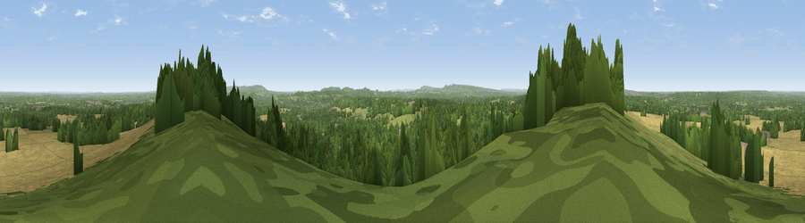

Viewpoint near Compton
#9398 in England · top 4% of its area beats it · near ComptonThe view, rendered

A 360° render of this exact spot computed from the terrain model, tree cover and land cover — summer colours, afternoon light, calibrated against photographs of famous viewpoints. Real trees, hedges and buildings will differ in detail.
The panorama
Grey silhouette: terrain skyline in each direction (720 bearings, Earth curvature and refraction included). Dashed green: skyline with trees (+15 m) and buildings (+8 m) as obstacles. Blue strip: how far the ground is visible on each bearing.
Where the view opens
Wedge length = distance to the farthest visible ground on that bearing (vegetation-aware). Rings at 10, 25 and 50 km.
What fills the view
44% woodland · 27% grassland · 26% cropland · 3% built-up
Angular shares of the visible panorama (visual magnitude), not map area. Landscape diversity 0.51 (0–1 Shannon).
Key numbers
More beautiful places nearby
The staircase of upgrades: each row has a higher view potential than everything closer. Driving times are estimates from straight-line distance, calibrated against real road routing — check an actual route before setting out.
| Place | Direction | Drive | Score |
|---|---|---|---|
| Viewpoint near Wanborough | W · 1 km | ~2 min | 65.5 |
| Viewpoint near Compton | E · 1 km | ~3 min | 66.7 |
| Viewpoint near Hascombe | SSE · 11 km | ~21 min | 70.1 |
| Viewpoint near Fernhurst | S · 19 km | ~33 min | 75.1 |
| Viewpoint near Cocking | SSW · 32 km | ~50 min | 77.6 |
| Viewpoint near Cocking | SSW · 32 km | ~50 min | 78.3 |
| Linch Down | SSW · 33 km | ~50 min | 85.2 |
| Beacon Hill | SSW · 33 km | ~51 min | 85.8 |
51.22710, -0.63909 · source: screening · position refined by local search. Computed location — check access rights before visiting.